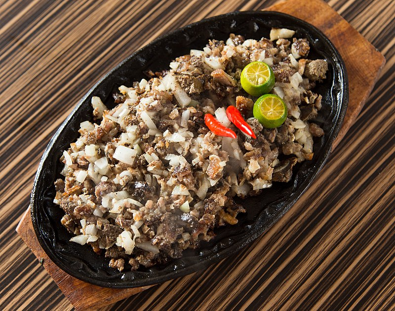

Pork Sisig

A Filipino dish made from pig's face and belly, and chicken liver which is usually
the appetizer when people are having a drink
Ingredients
- 1 lb pig ears
- 1 1/2 lb pork belly
- 1 pc minced onion
- 3 tbsp soy sayce
- 1/4 tsp ground black pepper
- 3 tbsp chili flakes
- 1/2 tsp garlic powder
- 1 pc lemon or 3-5 pc calamansi
- 1/2 cup butter or margarine
- 1/4 lb chicken liver
- 6 cups water
- 3 tbsp mayonnaise
- 1/2 tsp salt
- Optional: 1 knob minced ginger
- Optional: 1 pc egg
Directions
- Pour the water in a pan and bring to a boil. Add salt and pepper.
- Put-in the pig’s ears and pork belly then simmer for 40 minutes to 1 hour (or until tender).
- Remove the boiled ingredients from the pot then drain excess water.
- Grill the boiled pig ears and pork belly until done.
- Chop the pig ears and pork belly into fine pieces.
- In a wide pan, melt the butter or margarine. Add the onions. Cook until onions are soft.
- Put-in the ginger and cook for 2 minutes.
- Add the chicken liver. Crush the chicken liver while cooking it in the pan.
- Add the chopped pig ears and pork belly. Cook for 10 to 12 minutes.
- Put-in the soy sauce, garlic powder, and chili. Mix well.
- Add salt and pepper to taste.
- Put-in the mayonnaise and mix with the other ingredients.
- Transfer to a serving plate. Top with chopped green onions and raw egg.
- Serve hot. Share and Enjoy (add the lemon or calamansi before eating).
Go back